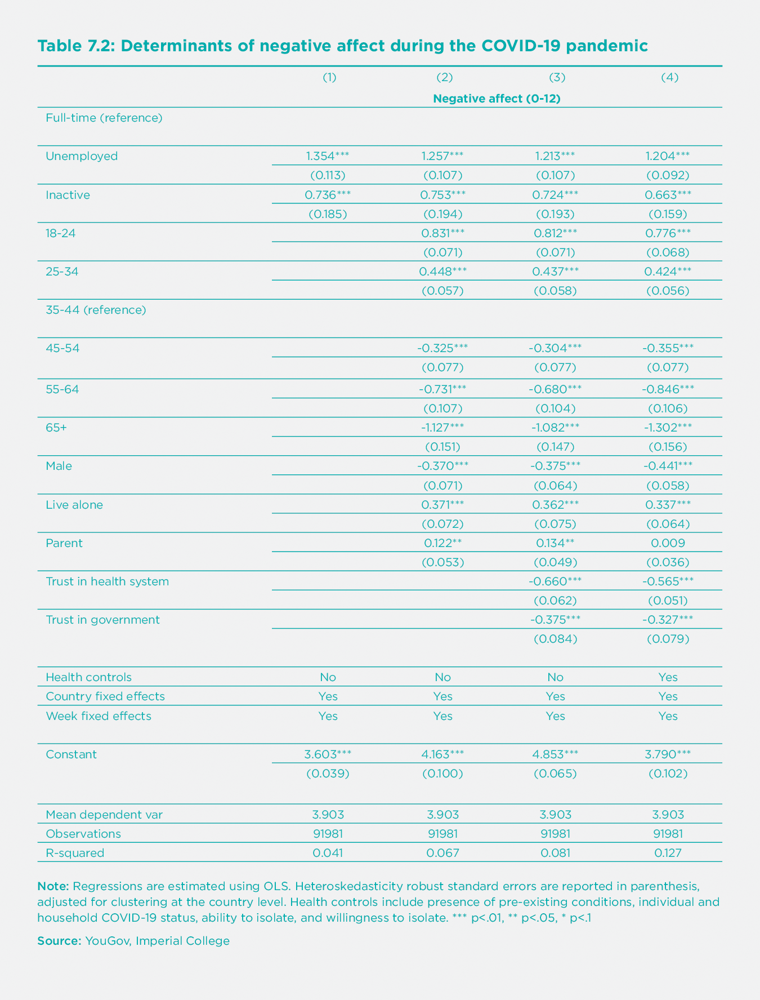

Work and Well-being during COVID-19: Impact, Inequalities, Resilience, and the Future of Work
The consequences of the COVID-19 pandemic on economic activity, employment, and our way of working have been far-reaching. In turn, all of these shocks have the potential to substantially impact subjective well-being. Our goal in this chapter is to outline the various ways in which the pandemic has affected the global labour market and the world of work and investigate the downstream impacts on workers’ well-being around the world.
We structure the chapter around five broad issues. In Section I, we begin by surveying global changes in employment and working hours, and highlight some key inequalities of impact by country, income, gender, age, and type of work. The remainder of the chapter focuses on the well-being implications of these changes. In Section II, we consider the well-being impacts of unemployment and labour market inactivity throughout the pandemic. In Section III, we turn to the well-being of employees who have retained their jobs, using a novel dataset of more than four million individuals collected on an ongoing basis since November 2019. In Section IV, we build on this analysis by investigating the key drivers of worker resilience during the crisis. In the final section, we speculate on how the changes to the global labour market brought on by COVID-19 may influence the future of work. In doing so, we offer a tentative account of how workers’ expectations may begin to change in the aftermath of the pandemic and how these changes could influence the drivers of workplace well-being in the years to come.
COVID-19 and the global labour market
Global growth is estimated to have contracted by almost 5 percent in 2020, representing the largest economic crisis in a generation.[1] At the beginning of the year, at the onset of the pandemic, consumer spending began to decline dramatically, most notably in retail and recreation. By April, visits to restaurants, cafes, shopping centres, theme parks, museums, libraries, and movie theatres had declined globally by almost 60 percent and by more than 80 percent in many European countries.[2] By December, almost 15 million airline flights had been cancelled, an average of 50,000 per day.[3] While the global economy began to rebound in the summer, many countries were gripped by a second wave in the autumn and winter. A full return to pre-pandemic levels of stability still appears to be a long way off.
Such dramatic economic downturns have had profound effects on the global labour market. As of January 2021, more than 90 percent of the world’s workforce lived in countries where business closures were still in place for at least some economy sectors.[4] Unemployment has also increased in many countries affected by the COVID-19 crisis, though unemployment figures alone do not capture the full extent of the labour market impact for two primary reasons.
First, many workers who have suffered job losses during the COVID-19 pandemic are not actively looking to find new jobs, and are therefore classified as “inactive” or “out of the labour force” in official statistics.[5] Increases in inactivity have, in fact, outpaced increases in unemployment in a majority of countries (Figure 7.1).[6] For workers who have recently lost their jobs, finding a new one amid a recession can be exceedingly difficult. Data from the international jobs site Indeed.com shows that, in many countries, the trend in job postings plummeted by more than 50 percent in April and remained well below 2019 trends by the end of the year (Figure 7.2).
Second, even while still in paid work, many workers have had to reduce their working hours as a result of the pandemic. Therefore, looking at declines in total hours worked offers a complete picture of the labour market impact of the crisis. According to the International Labour Organization (ILO), global working hours declined by 17.3 percent in the second quarter of 2020.[7] This is equivalent to 495 million full-time jobs lost.[8] By the end of the year, total working hour losses were roughly four times greater than during the Great Recession in 2009.[9] These dramatic reductions in working hours have been accompanied by equally dramatic reductions in income. Global labour income declined by 8.3 percent in 2020, amounting to a loss of USD 3.7 trillion, or 4.4 percent of global GDP.[10]
These changes are likely to have significant effects on well-being. Most studies generally find that those who are unemployed are 5 to 15 percent less satisfied with their lives than those employed.[11] In the 2017 edition of this report, we found that unemployed workers are on average 0.6 points less satisfied than counterparts working full-time on a scale from 0-10.[12] In high-income countries, this difference becomes even larger. In Western Europe and North America, full-time workers have been found to be 1.11 and 1.31 points more satisfied with their lives than those who are unemployed, respectively.[13] Relative to other life circumstances, becoming unemployed is also less subject to well-being adaptation over time.[14] Yet, importantly, the relationship between work and well-being extends beyond simply unemployment. Past research has documented strong negative impacts of underemployment, as well as labour market inactivity. In some analyses, the negative impact of working hour reductions and inactivity on life satisfaction is even larger than the negative impact of becoming unemployed.[15]
While the labour market impacts of the pandemic have been almost universally widespread, they have also been highly unequal. In the sections that follow, we highlight some key differences of impact across five dimensions: country, income, gender, age, and type of work. In turn, all of these dimensions feed into the uneven ways the pandemic has affected well-being across society.
Differences in impact between countries
The global economic impacts of the crisis have been so far highly unequal, with disproportionate effects in developing countries. Since March 2020, workers in lower-middle-income countries have experienced a 43 percent larger reduction in working hours and labour income than in high-income countries.[16] Informal sector workers, who make up a considerable portion of the labour force in developing countries, have been particularly at risk. Estimates from the ILO suggest that 1.6 billion informal sector workers have seen their hours decrease since the onset of the pandemic. In low-income countries, the resulting drop in earnings is estimated to be 86 percent.[17] Workers in developing countries are generally much less likely to work remotely, and therefore at higher risk of losing their jobs and contracting the disease in their normal work environments.[18] Many governments in low-income countries have also been financially incapable of providing workers with sufficient economic relief. As of October 2020, announced fiscal stimulus packages in low-income countries amount to only 13 percent of what would be required to offset the total loss in working hours.[19] These trends contribute to increased labour market instability in many of the world’s most vulnerable regions.
Even within high-income countries, there are large differences in the magnitude of the economic downturn. By the end of June 2020, GDP growth had decreased by 22 percent in Spain and the United Kingdom relative to the year before. In South Korea, Finland, and Norway, this figure was less than 5 percent.[20] In Europe, the economic consequences of the crisis have been outsized in countries with already precarious labour market conditions. Even workers employed in the same sector face considerably different economic outlooks. Among those working in food and accommodation, the risk of losing working hours at the beginning of the crisis was four times larger in Spain and Italy than in Denmark or Finland.[21] Young and low-skill workers have also been more likely to lose their jobs or reduce their working hours in Spain and Ireland than in Denmark or France (Figure 3b-c). Individual-level survey data collected at the height of the first wave documents similar cross-country differences in the United Kingdom, United States, and Germany, with employment losses being much more pronounced in the U.K. and U.S.[22]
While many of these effects have been shaped by public health policies in each country, labour market policies have also played an important role. Many countries have introduced fiscal stimulus packages to buffer the economic shock. By October 2020, governments around the world had promised upwards of USD 9 trillion to mitigate the negative economic consequences of the pandemic.[23] These policies pertain to the labour market and are generally aimed at job retention and/or income replacement. Job retention schemes strive to keep contracts between employees and employers intact by alleviating firms’ labour costs and subsidizing workers for lost hours. As of May 2020, job retention policies were supporting more than 50 million jobs in OECD countries.[24] On the other hand, income replacement schemes seek to provide financial relief directly to affected workers without explicitly seeking to maintain employment contracts. This approach was characteristic of the early response to the pandemic in the United States.
Generally speaking, countries that have introduced larger and more comprehensive fiscal stimulus packages have seen less severe reductions in working hours.[25] However, key differences of impact across countries have also emerged, depending on the policy approach adopted. We will explore these dynamics in greater detail in Section II.
Low-income and low-skill workers
One of the starkest consequences of the crisis has been the exacerbation of existing socio-economic inequalities. In almost every European country, low-income and low-skill workers were more likely to have reduced their working hours (Figure 7.3a) or lost their jobs (Figure 7.3b) in the early phases of the pandemic.[26] In Ireland, twice as many low-income workers reduced their working hours relative to high-income workers. In Sweden, low-skill workers experienced working hour declines that were almost three times as large as the national average. Similar trends have been observed in Japan, the United States, and the United Kingdom.[27] In the U.K., almost one-third of low-income households had lost more than 20 percent of their earnings by the end of the first wave, while only one-fifth of high-income households reported the same.[28] College-educated workers in the U.K. were also 6 percent less likely to have lost their jobs in April relative to lower-educated workers.[29] In the United States, employment rates for low-income workers sunk by 24 percent as of December 2020. For high-income workers, the recession had practically ended by the same time, with an observable increase in employment of 1 percent compared to the year before.[30]
Vulnerable workers were also at greater risk of experiencing low subjective well-being before the pandemic took root. Low-income and low-skill workers are typically less satisfied with their jobs while also more dependent on them.[31] Like many other dynamics detailed in this chapter, the labour market impacts of the pandemic have seemed to fall disproportionally on those already in more precarious positions, to begin with.
Coupled with delays to education and training programs, obstacles to finding work, and increases in loneliness and social isolation, the COVID-19 pandemic has taken a particularly dramatic toll on young people’s well-being.
Disproportionate effects of the pandemic on young people
Young people are facing multiple social and economic shocks resulting from the COVID-19 crisis. Data from the International Labour Organization (ILO) indicates that roughly 178 million young people – 1 in 4 of the global working population between the ages of 15 and 24 – worked in the hardest-hit sectors when the pandemic began. Young women, in particular, make up more than half of youth employment in food and accommodation. More than 75 percent of young workers are also informally employed. In low-income countries, this percentage climbs to above 90 percent.[32]
The resulting increases in youth unemployment and inactivity have been severe. Between February and July 2020, employment among adults declined by 5.1 percent, while employment among young adults fell by 17.4 percent, more than three times as much.[33] In the United States, roughly 1 in 4 young adults were unemployed during the same period, an increase of 290 percent from the year before.[34] By the end of September, young people also faced greater than average risks of losing their jobs in almost every European country (Figure 7.3c). Rates of inactivity among young workers have also outpaced corresponding rates of inactivity among adults in Australia, Canada, South Korea, and the United States.[35] Coupled with delays to education and training programs, obstacles to finding work, and increases in loneliness and social isolation, the COVID-19 pandemic has taken a particularly dramatic toll on young people’s well-being.[36]
Gendered impacts of COVID-19
Women have also been particularly vulnerable to the labour market consequences of the pandemic. Globally, four in ten employed women work in sectors that were hard-hit by COVID-19, including travel, retail, food, accommodation, and services. In low-and middle-income countries, women are also much more likely to be employed in domestic work, a sector in which three out of four workers were at risk of losing their job in June 2020. At the same time, women are also overrepresented in certain essential sectors, including health and social work, exposing them to greater physical and mental health risks. In many high-income countries, more than 80 percent of the health workforce is made up of women.[37] Perhaps, as a result, early estimates regarding gender gaps in the ability to work from home and employment changes have provided mixed results.[38] For example, in Europe, women were more likely to lose their jobs in Finland, France, and Belgium, but not in Sweden, Portugal, or Denmark (Figure 7.3d).
Childcare responsibilities arising as a result of school closures can also play a role in the reduction of working mothers’ labour supply.[39] Single parents are particularly at risk, of whom almost four out of five around the world are women.[40] Single mothers were also much more likely to be socioeconomically disadvantaged before the pandemic began.[41] In the United Kingdom, single mothers are more likely to work in hard-hit sectors, less likely to own a house, and less likely to have access to a car. They have also been much more likely to reduce their hours or leave the labour force entirely as a result of the crisis.[42] In the United States – a country in which one in four children live in single-parent households, the highest rate globally – single mothers have been less satisfied with their working hours and more likely to report low productivity since the pandemic began.[43]
Yet, even among coupled adults, women have seemed to bear the brunt of the burden. Using panel data collected in the United States from February to April 2020, one study found that mothers had reduced their working hours by two hours per week, roughly four to five times more than fathers.[44] This trend was even more pronounced among parents with young children and did not seem to depend on the extent to which either partner worked from home. In the early phases of the pandemic, mothers in the U.K., U.S., and Germany were also spending considerably more time on childcare than fathers and slightly more time on home-schooling activities.[45] Even among working parents, large gender gaps in time spent on childcare remain (Figure 7.4).[46] However, there is also evidence to suggest that these gender gaps may be getting smaller. In many countries, fathers have also increased time spent on childcare since the beginning of the pandemic, leading to slight shifts towards more egalitarian distributions of labour.[47]
Accommodation, food service, and temporary workers have been hit hardest
Differences in the extent to which workers can shift to a home office have become extremely salient during the pandemic. The ability to work from home has been an important predictor of job loss.[48] These impacts have also varied considerably by sector. Accommodation and food service employees have been particularly hard hit (Figure 7.5). Workers employed under less secure work arrangements have also been more likely to lose their job or suffer earnings losses during the crisis. One study found that roughly 30 percent of survey respondents employed under temporary contracts in the United States and the United Kingdom had lost their job by early April, compared to roughly 15 percent of permanent employees.[49] In Europe, workers on temporary contracts were more likely to lose their jobs in the second quarter of 2020 than both low-income and low-skill workers.[50]
(Un)employment and well-being during COVID-19
Given the vital role that work plays in our lives, it is crucial to understand how rising levels of unemployment and inactivity have impacted well-being. We use data from the COVID-19 Behaviour Tracker, a joint project between Imperial College London and YouGov, which integrates weekly data on behaviour and life satisfaction as a response to COVID-19, using respondents’ information from 29 large economies.[51] We restrict our analysis to 32 weeks of data, beginning at the onset of the pandemic, that track life satisfaction and negative affect on a weekly basis for a representative sample of respondents from each country (n=363,768). Between April 2020 and January 2021, the average respondent in these 29 countries ranked their life satisfaction as 6.3 on a 0 to 10-point scale, with a standard deviation of 2.0.[52]
Life satisfaction, unemployment, and inactivity
One of the most robust and well-documented findings in the economics of subjective well-being is that the unemployed are significantly less happy than the employed. Yet, the relationship between employment and well-being also tends to be moderated by background labour market conditions. In times of recession, the negative impact of unemployment on subjective well-being is generally less severe – an effect that is usually attributed to the reduced social stigma associated with job loss.[53] In the present context, the large increases in unemployment and inactivity due to the coronavirus may attenuate the negative impact of being laid off or reducing working hours, as the social stigma associated with unemployment is likely to be reduced in times of trouble. At the same time, workers who experience hardships associated with COVID-19 and become more unhappy may also become more likely to resign from work or lose their jobs.[54] This dynamic could lead to even greater declines in well-being associated with job loss for vulnerable workers during the pandemic.
Figure 7.6 shows the average life satisfaction for the unemployed compared to those in part-time or full-time employment, averaged across all months between April 2020 and January 2021. In line with previous findings, we find that in all countries, unemployed respondents score substantially lower on the Cantril Ladder. On average, the life satisfaction of employed respondents is 6.4 on a scale from 0 to 10, while the life satisfaction of unemployed respondents is markedly lower at 5.2. This is a sizable difference of 1.2 points, equivalent to 60 percent of a standard deviation in life satisfaction.[55]
Figure 7 shows how life satisfaction by employment status varies across gender. When employed, men and women have very similar levels of life satisfaction. However, unemployment appears to decrease men's happiness more than women, though the gap varies significantly across countries. This finding that men tend to be more severely affected by unemployment than women is largely consistent with prior evidence and appears not to have been dramatically altered by the onset of COVID-19.[56] In the appendix, we also plot patterns of life satisfaction and employment for different age groups.[57] Across countries, middle-aged adults are generally less satisfied with their lives when unemployed than other age cohorts, although there are some notable exceptions, including Brazil, India, and Mexico.[58]
In Table 7.1, we estimate a linear regression model in which life satisfaction is regressed on employment status and additional control variables to isolate the impact of not being able to work during the pandemic. The reference category in terms of employment status, in this case, are respondents working full-time.[59] The coefficients in column (1) show that unemployed respondents' life satisfaction is significantly lower than that of people working full-time throughout this period. Labour market inactivity – characterised by not having a job and no longer looking for one – also has a statistically significant negative effect on life satisfaction.
In column (2), we add into the equation a set of individual characteristics, including age, gender, household size, and parenthood status. In column (3), we add two variables indicating trust in the national healthcare system and trust in the national government.[60] Finally, in column (4), we add a series of health-related control variables, including the presence of any pre-existing conditions, whether or not the respondent or anyone else in the household has tested positive for COVID-19, ability to isolate, and willingness to isolate. Overall, we find highly consistent associations between unemployment, inactivity, and subjective well-being. Once the full suite of control variables is added, we find that, relative to full-time workers, unemployment predicts a 1.3-point decline in life satisfaction, while inactivity predicts a 0.7-point decline on a scale from 0 to 10. These effects render employment status one of the most important predictors of subjective well-being during the COVID-19 crisis across countries.
Negative affect and employment status
In this section, we consider the association between employment status and negative affect. Our dataset records responses along four dimensions: depression, anxiety, worry, and lack of interest in daily activities. Responses to each negative affect question are recorded on a scale from 0 to 3, where higher values correspond to higher levels of negative affect.[61] Responses to these four questions are then aggregated to provide an overall assessment of negative affect on a scale from 0 to 12, with a mean value of 3.7. Disaggregated regressions for each dimension are also provided in the appendix.[62]
Table 7.2 shows how variation in negative affect is explained by employment status, personal characteristics, trust in institutions, health status, and country and week fixed effects. Those who report being unemployed or inactive during the pandemic report significantly higher levels of negative affect than those who are employed on a full-time basis. The standard deviation of the negative affect index variable is about 3.3 on a 0 to 12-point scale, indicating that the coefficients on unemployment and inactivity are both statistically and meaningfully significant. Even after including an extensive set of controls, unemployed respondents score 1.2 points (0.4 standard deviations) higher in negative affect than full-time workers, while those who are out of the labour force report negative affect scores that are 0.67 points (0.2 standard deviations) higher on a scale from 0 to 12.

Age, gender, and employment status during COVID-19
Given the unequal impacts of the crisis, it is worth commenting on differential well-being impacts of unemployment by age and gender. First, we find that every age group reported higher levels of life satisfaction than young people (18-24) during the pandemic, a difference that also seems to increase with age (Table 7.1). Related research conducted during COVID-19 has documented similar decreases in life satisfaction among young people.[63] These trends are notably different from past studies before the crisis, which tend to track a U-shape curve in life satisfaction over the life course.[64] At the same time, we also find that young people have seemed to experience higher levels of negative affect than older adults (Table 2). Taken together, this evidence suggests that young people’s subjective well-being has been dramatically impacted by the onset of the pandemic, more so than almost any other age group.
However, in the appendix, we provide evidence that the effect of unemployment on life satisfaction and on negative affect has been comparatively smaller for young people than for older adults throughout the crisis.[65] Instead, we observe particularly pronounced effects of unemployment on well-being for those middle-aged and older. This could indicate that young people may expect the difficulties in finding work to pass once the pandemic has subsided, while older adults who have lost their job in the midst of COVID-19 may be less optimistic.[66] While we observe slight increases in the impact of inactivity on negative affect for middle-aged adults relative to young people, these differences prove to be only marginally significant.
In line with previous studies, we also find that the effects of unemployment on life satisfaction for men have been more severe than for women throughout the pandemic.[67] Labour market inactivity has also seemed to reduce life satisfaction more for men than for women, to an even greater extent than the gendered impact of unemployment.[68]
Parenthood and unemployment
In Table A4 in the appendix, we also consider the impacts of unemployment and inactivity on life satisfaction for adults with and without children. First, it is worth noting that both men and women with children have generally reported higher levels of life satisfaction than non-parents throughout the crisis.[69] However, the interaction of parenthood and unemployment on life satisfaction proves to be insignificant. In other words, we do not find strong evidence that having children exacerbated the impact of unemployment on life satisfaction during the pandemic.
However, we observe that having children in the household can mitigate the negative impact of inactivity on life satisfaction. While the overall impact of inactivity is still negative, men and women with children seemed to have experienced less severe reductions in life satisfaction as a result of being out of the labour force than those without children. This dynamic may suggest that adults with children who have left the labour market due to the pandemic have been able to spend more time with their children at home, thereby attenuating the negative effects of the crisis on life satisfaction.
We also find that, while having children predicts higher levels of negative affect for both men and women, having children does diminish the affective impact of unemployment for men and inactivity for women. Overall, we find that men without children experience a sharper uptick in negative affect as a result of unemployment and inactivity than any other group under consideration.[70]
Labour market policy responses to COVID-19 and well-being
While most governments have adopted measures to protect workers from labour market shocks related to COVID-19, there has been a large degree of variation in the responses and policy packages implemented by different countries. Following our discussion in Section I, we distinguish between policies focused on job retention, which aim to keep workers employed in their jobs, and interventions focused on income replacement, aiming to top up lost wages without necessarily maintaining employment contracts.
Alongside their economic effects, these strategies are also expected to have differential effects on subjective well-being. Most importantly, income replacement schemes are not designed to address the non-pecuniary aspects of work. While maintaining a sustainable source of income is undeniably important to well-being, employed workers also benefit from a broad range of non-monetary rewards. Jobs can provide a source of meaning, community, and social status. Therefore, job retention policies are likely preferable to income replacement policies from a well-being perspective, as the former are better poised to keep these non-financial advantages of employment intact.
In this section, we look at three large economies that have adopted different labour market policies: Germany, which focused on job retention using short-time work schemes; the United Kingdom, which focused on job retention using wage subsidy schemes; and the United States, which focused largely on income replacement.
In Germany, workers have benefited from Kurzarbeit, a long-running program that allows employers to reduce their employees’ working hours up to 100 percent, with the state covering all or most of the difference in lost wages. In March 2020, the German government expanded access to the program and loosened the eligibility criteria so that more businesses would be able to apply for benefits. Governments in the United Kingdom and the United States also introduced relief packages to assist workers, though they have generally been more restrictive.[71] In the U.K., the Coronavirus Job Retention Scheme allowed firms to furlough workers for up to three months while replacing 80 percent of employees’ lost wages, for up to £2,500 per month. However, unlike the German Kurzarbeit, furloughed workers were not allowed to undertake any work for their employers in the initial phase of the program.[72] From July 2020 onwards, this policy was adjusted to allow employees to work part-time. In the United States, the Coronavirus Aid, Relief, and Economic Security (CARES) Act included provisions to subsidize firms’ labour costs, although few firms took up the program. The program’s rollout was limited by administrative bottlenecks, lack of awareness, weak financial incentives, and caps on reductions in working hours.[73] In practice, the United States relief effort functioned much more effectively as an income replacement scheme. Initially, unemployment benefits were increased to $600 per week for four months, and households earning under $75,000 per year were sent one-time direct payments of $1,200, plus an extra $500 per child. Likely as a result of these divergent approaches, rates of unemployment and inactivity increased much more in the United States than in the United Kingdom or Germany.[74]
To consider the well-being implications of these approaches, we plot national averages of life satisfaction (Figure 7.8a) and negative affect (Figure 7.8b) for all three countries starting in April 2020.[75] Data for the United States extends until mid-September, while data for the United Kingdom and Germany extends through December. For both Germany and the U.K., we see slight increases in life satisfaction from April onwards followed by slight decreases as both countries entered second waves of infections in autumn. However, while Germany never drops below initial record levels, the trend in the U.K. becomes increasingly negative towards the end of the summer. Both trends are also dramatically different than the United States, which sees a steep linear decline in life satisfaction throughout the spring and summer. In September, respondents in the U.S. rated their life satisfaction to be 0.2 points lower than Germany, even though the former reported higher levels of life satisfaction at the start of the pandemic in April.
In terms of negative affect, we see a sharp divergence between Germany and the United States, and the United Kingdom. Respondents in the latter two countries not only reported higher levels of negative affect, to begin with, but also seemed to experience steeper increases as time went on. By September, negative affect had increased by 10 percent in the United States and 6 percent in the United Kingdom. In Germany, negative affect had decreased by 2 percent by the same time. However, Germany then began to experience increases in negative affect towards the end of the year, while negative affect in the United Kingdom began to steadily decline.
While this analysis does not allow for causal interpretations, it does suggest that Germany and the United Kingdom, both of which adopted policies aimed at job retention, have been better able to withstand the negative well-being impacts of the pandemic than the United States.
Employee well-being during the COVID-19 pandemic
Thus far, we have mostly considered the well-being impacts of unemployment and inactivity. In this section, we turn our focus to those who have remained employed. The landscape of work has changed dramatically as a result of COVID-19. Many workers have begun working from home, while others have had to reduce their working hours. At the same time, employees in key professions may have seen their workload increase dramatically while being exposed to additional workplace stressors and health risks. Changes to workplace conditions and cultures brought on by the crisis are likely to have long-lasting impacts. Many of the world’s largest companies, including Google, Facebook, Twitter, Amazon, and Viacom, have announced plans to allow employees to continue working remotely after the pandemic has subsided.[76] Therefore, it is crucial to understand how employees have fared in this new world of work and what these effects may tell us about the future of work.
For those remaining at work, how was their well-being affected?
In this section, we consider the evolution of worker well-being throughout the pandemic thus far. To do so, we make use of a novel proprietary dataset set collected in the United States. Beginning in November 2019, the jobs website Indeed.com has been collecting data on employee happiness in an effort to assist jobseekers in their job search and decision-making process by providing them with company reviews from current and former employees. Since then, the company has amassed a very large and growing depository of data on workplace happiness in the United States, with over 5 million individual responses so far.
The great benefit of this unique dataset is its sheer size. Even over a relatively short period, such a large number of observations allows for a granular look at workplace happiness across companies, locations, and time. However, because users decide for themselves whether or not to use the site and whether or not to review the company they currently work for, the sample is, of course, not a random or nationally representative one. Average estimates of workplace happiness may be biased if, for example, very happy or very disgruntled employees are more motivated to fill in the survey. However, to the extent that these potential sources of bias are evenly distributed across companies and over time, it may nevertheless be instructive to observe trends in the evolution of workplace happiness during the pandemic.
Since users can review companies they currently and formerly work for, we limit the sample for our purposes here to include only a subset of respondents who we are most confident currently work for the company they are reviewing. In this case, we are primarily concerned with the extent to which respondents agree with the following statement: “I feel happy at work most of the time.” Responses are recorded from 1 (strongly disagree) to 5 (strongly agree).[77] This number is then rescaled by Indeed to provide an overall indication of workplace happiness from 0 to 100.[78]
In order to study the evolution of workplace happiness over time, we first plot average daily happiness using the raw data in Figure 7.9, overlayed with a local regression (or “lowess”) line of best fit. We find that workplace happiness declined throughout January and February, as the beginnings of the crisis unfolded. This downward trend reaches its bottom and levels out around the time that the federal government declared a national state of emergency, and various state and local governments began to impose stay-at-home orders. Perhaps counterintuitively, workplace happiness then proceeded to increase, reaching the year’s high around the time $1,200 stimulus checks were mailed out to recipients in mid-April as a result of the CARES Act.
Given our dataset’s limitations, it is impossible for us to say exactly why workplace happiness increased following the state of emergency declaration and remains open to future research. One conjecture is that the uncertainty of a rapidly unfolding crisis was eased once local governments began to respond to the severity of the crisis with policy measures, and many people were ordered to stay home. During this period, the federal government also began negotiating a stimulus package, which may have helped to soothe some workers’ fears of job loss and provided the reassurance of an eventual cash stimulus payment. In Section IV, we present related evidence that happiness levels reached their lowest point in the United Kingdom just before lockdowns were implemented, after which they began to recover. Taken together, this may suggest that uncertainty and anticipation effects could have had stronger negative effects on well-being than government policy throughout the crisis.
Another possibility is more mechanical. As we have seen elsewhere in this chapter, this phase of increasing workplace happiness in March and April coincided with an unprecedented and precipitous rise in unemployment.[79] It is worth re-iterating that ours is not a measure of average workforce happiness, but only of average happiness for those currently employed. As a result, we are only observing those who remain in work – the “survivors” in this period. This changing composition of the sample may account for at least some of the observed changes in happiness. For example, (a) happier workers may have been more likely to retain their jobs in any given occupation or industry, (b) higher wage (and generally happier) industries were less acutely affected, © workers’ reference groups may have changed, and/or (d) workers remaining employed may have been more able to work from home in the first place, and therefore less negatively affected by workplace closures.[80] Given the limitations of our data, we cannot easily distinguish between these potential explanations.
Workplace happiness then began to decline after the initial boost in March and April. Interestingly, the lowest point of the year was not when a national emergency was declared, but later in the year, once workers’ resilience ostensibly began to wear off and the long-haul nature of the pandemic became a reality. Happiness levels continued to erode in autumn and still had not recovered by the end of the year. This is notable since, by autumn, employment levels among high-wage workers had fully returned to pre-pandemic levels in the United States, while employment levels for middle-wage workers and especially low-wage workers remained well below the baseline.[81] Inasmuch as this changing composition of the national workforce is reflected in our sample, the fact that happiness levels did not increase even as high-wage workers were increasingly re-hired is worth highlighting. The lack of a summer recovery in happiness levels is also somewhat at odds with trends observed in other countries, including the United Kingdom and Germany.[82] However, while many European countries experienced declines in COVID-19 cases after the first wave in the spring, the United States experienced an even more dramatic second wave throughout the summer months. Nevertheless, it is again important to stress that these explanations should be interpreted with caution because the sample is not randomly collected or nationally representative. It remains possible that at least some of the observed changes in happiness may be attributable to changes in data collection procedures.[83] Future research using more traditional academic and government data sources may begin to shed more light on these dynamics.
Drivers of employee well-being in times of crisis
Alongside the happiness question, survey respondents on Indeed.com were also asked about eleven “drivers” of workplace well-being as part of the company reviewing process.[84] In this section, we use this data to consider how job and workplace characteristics shaped employee well-being throughout the course of the pandemic. We look at the extent to which workers (1) feel they achieve their goals at work, (2) have a clear sense of purpose, (3) feel appreciated, (4) feel a sense of belonging, (5) have the time and location flexibility they need, (6) work in an inclusive and respectful environment, (7) learn at work, (8) have a manager who helps them succeed, (9) are paid fairly, (10) feel supported, and (11) trust their colleagues.[85] Our intention in this section is not only to assess the degree to which of these drivers are correlated with workplace happiness but also to consider if and to what extent their importance has shifted throughout the course of the pandemic.
To this end, we again restrict the sample to include only respondents who we are confident are currently employed at the company they are reviewing. In Table 3, we regress workplace happiness (measured on a scale from 0 to 100) on this set of eleven drivers (each one of which we z-score to have a mean of 0 and standard deviation of 1). We use data recorded prior to March 1, 2020, and after April 1, 2020.[86] We create an indicator variable for the period after the onset of COVID-19 – i.e., after April 1 – and interact it with each driver.[87] Finally, we include a battery of fixed effects, including the date of survey completion, company, occupation, where the respondent clicked through to the survey, and state.[88] To help visualize these dynamics, coefficients associated with each driver are plotted on a month-to-month basis in Figure 7.10.[89]
While all of the eleven drivers are significantly related to happiness, we can also observe a number of changes in the strength of these correlations as the year progressed.[90] We note two broad developments here. First, more eudaimonic drivers of workplace happiness – achievement, purpose, and learning at work – appear to have declined in importance.[91] Amid rising unemployment and shifts to remote working environments, this may suggest that employees have come to value their work for more fundamental reasons during the pandemic and may simply be happy to have a reliable source of income. These developments may also have long-term consequences. For example, there is an intriguing possibility that young people who come of age during this crisis may be more likely to prioritize financial security than job meaning or purpose as they enter the workforce. We will return to this issue in Section V.
The second notable development is that, as the pandemic worsened, flexible work schedules and supportive management have become even more important. With ever-changing workplace restrictions, it may be unsurprising that workers have come to value time and location flexibility more than ever before. Yet, the role of managers has also increased in importance to an even greater degree. Past research suggests that the more employees work from home, the more likely they are to depend on their supervisors’ frequent contact.[92] Since the onset of the crisis, many workers have reported feeling unprepared to fulfil their responsibilities, again underscoring the need for good communication between managers and employees.[93] Our analysis in this section reflects these trends.
However, despite these modest changes, it is worth noting that the drivers of workplace well-being have generally remained constant since the onset of COVID-19. Even in turbulent times, the well-being of workers is highly dependent on consistent and fundamental drivers. As a result, organizations that cultivate workplace environments to foster and sustain these drivers in good times may also be better prepared to withstand labour market shocks and support employee well-being in times of economic uncertainty.
The drivers of workplace well-being have generally remained constant since the onset of COVID-19. Even in turbulent times, the well-being of workers is highly dependent on consistent and fundamental drivers.
Resilience
As documented in Section I, the consequences of the pandemic on the global labour market have been unequally shared. Yet even for workers faced with similar prospects and labour market outcomes, some have been better able to maintain high levels of well-being than others. To better understand the determinants of worker resilience throughout the crisis, in this section, we will focus on the United Kingdom's case using two longitudinal datasets. The first is a weekly quasi-panel study surveying representative samples of the British public from January to December 2020, provided by YouGov.[94] The second is a weekly panel study surveying respondents over time from April to December 2020, provided by University College London.[95]
White- and blue-collar workers
In this section, using data provided by the YouGov Weekly Tracker, we consider the happiness trajectories of white- and blue-collar workers who remained employed throughout the crisis. White-collar workers include managers, senior administrators, higher technical workers, professionals, and clerical workers. Blue-collar workers include those performing skilled or unskilled manual labour. In Figure 7.11, we plot the percent of each group reporting feeling happy in the previous week.[96] Dotted vertical lines indicate national lockdowns implemented in the United Kingdom on March 23 and November 5.[97]
First, it is worth noting the consistent gap in happiness levels between white- and blue-collar workers. From January to March of 2020, roughly 12 percent more white-collar workers reported feeling happy than blue workers, a gap that widened to 14 percent from April to December, on average. However, the size of this gap also varied throughout the year, with the smallest differences recorded at the time of the first and second lockdowns.
In line with previous results reported in this chapter, both groups' happiness levels also began to decline dramatically in February and March, before the first national lockdown was implemented. Both declines are roughly comparable, reaching lows of 38 percent for white-collar workers and 34 percent for blue-collar workers. Beginning in April, happiness levels began to steadily rebound for both groups, although white-collar workers recovered faster than blue-collar workers after the first wave. Whereas 40 percent of white-collar workers reported feeling happy by mid-April, it took another six weeks for blue-collar workers to reach the same milestone. This upward trend continued throughout the summer until both groups had almost fully recovered to baseline levels in August. However, fewer workers in both groups then began to report feeling happy in the period leading up to the second lockdown. These drops were again roughly proportional, though in this case, a higher percentage of white-collar workers seem to have been affected than blue-collar workers.
While we can’t rule out the possibility that survivorship bias may again drive some of the happiness recoveries after the first wave, this dynamic may be expected to affect both groups of workers equally. Overall, this analysis would suggest that, at least among these two groups, the government response to coronavirus was not responsible for the most severe drops in employee well-being. Rather, anxieties relating to the spread of the virus itself, anticipated future lockdowns, or uncertain employment prospects seem more likely to be driving declines in happiness throughout the pandemic.[98]
Social support protects against the negative impact of being unable to work
In Section II, we found that having children seemed to protect against some of the negative well-being impacts of not having a job during the pandemic, especially for men. However, while rates of unemployment and inactivity have certainly increased in many countries worldwide, the crisis has also resulted in many more subtle labour market effects. Even for workers who have not lost their jobs, many have been unable to work for short periods of time due to virus infections or exposure, to take care of loved ones, or because workplace closures or restrictions temporarily prevented them from doing so. How these workers have fared throughout the crisis is crucial to understanding the full well-being impact of COVID-19. In this section, we will again focus on the United Kingdom’s case using data provided by the UCL Social Study, a longitudinal panel documenting changes in social behaviour and mental health in the U.K. since April 2020.
As has been documented in numerous editions of this report, social connection has consistently proven to be one of the essential drivers of subjective well-being. Here we consider social connection in terms of subjective loneliness assessed using the three-item UCLA Loneliness Scale.[99] We limit the sample to those employed at the beginning of the survey period and split respondents into two groups, one containing respondents who report rarely feeling lonely and the other containing respondents who report often feeling lonely.[100] Throughout the pandemic, respondents in the U.K. who were not lonely reported average life satisfaction scores of 7.0 on a scale from 0 to 10, while those who were lonely reported average scores of 4.9 points. In other words, non-lonely respondents were roughly 43 percent more satisfied with their lives than lonely respondents, representing a substantial difference in quality of life.
Feeling isolated may also make it more difficult to deal with negative life events. In Figure 7.12, we document changes in life satisfaction for lonely and non-lonely respondents in the eight weeks before and after the first time in the survey period where they reported being unable to work.[101] In the weeks leading up to the work stoppage, we notice a potential anticipation effect for both groups, as life satisfaction levels begin to decline steadily. However, for lonely respondents, this drop becomes substantially larger than for non-lonely respondents. By the time they stopped working, lonely respondents’ life satisfaction had dropped by 15 percent of its baseline level, while the life satisfaction of non-lonely respondents had declined by 9 percent. Feeling lonely also seems to predict a slower pace of recovery. While we do not observe full adaptation for either group, non-lonely respondents had recovered to 95 percent of their baseline life satisfaction five weeks later. Lonely respondents had still not reached this milestone eight weeks on.
To further investigate these dynamics, in Table 4, we consider the effect of stopping work on life satisfaction using fixed effects regressions controlling for individual and time fixed effects. We find significant and meaningful differences between the impact of work stoppages for lonely and non-lonely respondents. While not being able to work reduces life satisfaction by 0.28 points for those who are not lonely, this figure rises by roughly one third to 0.38 points for lonely respondents. Taken together, this evidence suggests that social support networks can help to buffer against the negative impacts of hard times.
Impact of furloughing on subjective well-being
In response to the economic consequences of the pandemic, many governments introduced labour market legislation to protect workers against reductions in working hours and losses in income. As discussed in Section II, the United Kingdom government enabled firms to furlough workers for up to three months while replacing 80 percent of employees' lost wages for up to £2,500 per month. However, until July 2020, to receive these benefits, workers could not undertake any paid work for their employers. In this section, we consider the potential well-being impacts of this scheme. In this case, we limit our sample to include workers who were employed part-time or full-time at the beginning of the survey period but then stopped working entirely and were either (a) furloughed without any income loss, (b) furloughed with income loss, or © stopped work without being furloughed at all.[102]
In Figure 7.13, we plot average changes in life satisfaction levels for all three groups of workers four weeks before and after stopping work for the first time in the survey period. Regardless of furlough status or income loss, all groups of workers appear to suffer a decline in life satisfaction when unable to work. However, for workers who are furloughed without any income losses, this decline never exceeds 6 percent. On the other hand, the life satisfaction of furloughed and non-furloughed workers with income losses drops by 10 and 21 percent, respectively. Moreover, only furloughed workers without any income loss achieve full adaptation four weeks later. This may suggest that furlough schemes in which wages are replaced in full protect the well-being of affected workers better than those with only partial income replacement.
Table 7.5 expands this analysis by estimating the effect of stopping work on life satisfaction depending on furlough status and income losses using a fixed effects regression controlling for individual and week fixed effects.[103] Once again, we find that stopping work has a negative impact on life satisfaction, regardless of furlough status or income losses.[104] Even for workers who suffered no income losses due to being furloughed, their life satisfaction declined by 0.38 points relative to those who were able to continue working. These dynamics again indicate that the relationship between work to well-being extends beyond pecuniary benefits alone. This would also seem to run counter to classic tenets of economic theory, which understand the relationship between employment and welfare exclusively in terms of financial compensation. From this perspective, workers who stopped working without any lost income should not only have experienced no decline in welfare but actually experienced a welfare gain. We do not observe this to be the case. However, we do find suggestive evidence that workers who suffered no income losses as a result of being furloughed were better off than workers who did. Yet, these differences are mostly within the margin of error.
Moving forward, it will be important to maintain the benefits of working from home while still enabling employees and companies to build and sustain their social and intellectual capital.
Lessons for the “future of work”
Throughout this chapter, we have documented stark labour market impacts brought on by the coronavirus crisis and their impact on workers’ well-being. While the crisis itself might end soon, its impact on the global world of work may well endure. In the wake of the crisis, it is possible that some workers may begin to look for jobs that are more meaningful and that have strong social support networks, while others may begin to prioritize earnings and job security. The dynamics of these effects are difficult to predict, though documented changes in labour market expectations in the aftermath of previous recessions may provide some indication. Using longitudinal data on more than 20,000 workers in the United States from 1973 to 2014, one analysis found that young people who come of age in worse macroeconomic conditions are more likely to value financial security than job meaning throughout their careers.[105] Early evidence from the initial phase of the current crisis also suggests that young people who experienced health and financial losses resulting from the pandemic were more likely to report career uncertainty and financial worry.[106] While it is still too early to tell, the pandemic’s impact on this generation of young people may result in a shifting landscape of work values and expectations in the years to come.
In the short term, perhaps the most salient change brought on by the pandemic has been the need to work from home for those who can. As is the case in most other countries, the fraction of the workforce homeworking in the United Kingdom stood at one fourth in October 2020, down from about half during the first lockdown, but far above the pre-pandemic level of just 5 percent.[107] While workers have reported slight productivity declines during the crisis, they have also experienced immediate benefits such as greater autonomy and avoiding the commute (and the expenses associated with it).[108]
Sensing a workplace revolution, some companies have already decided to get rid of their offices entirely.[109] However, this risks overlooking important potential negative impacts of homeworking full-time. This shift could undermine social and intellectual capital, which may harm companies and their employees in the long-term. In this context, social and intellectual capital can be visualised as stocks that are slowly being depleted when working mostly from home. These stocks are normally replenished by new in-flows of people, places, and ideas. For workers, social and intellectual capital is built by shared experiences with co-workers and unplanned social interactions that broaden one’s thinking. While past research has found some clear benefits in productivity for home workers, they also found that they are more likely to be overlooked for promotion—a clear indication of the need to build social capital with colleagues.[110]
Building meaningful relationships with co-workers, especially management, is critical to job and life satisfaction. Working from home all the time does not allow for that to the same extent as the office.[111] Work itself represents more than a pay check — it is a large part of many people’s identity. Prior research suggests that when somebody loses their job, half of the negative impact on well-being stems not from the loss of income but from the loss of social ties, identity, and routine that come with a job.[112] In this chapter, we found that during the pandemic, workers who were furloughed with full income replacement still suffered significant well-being losses relative to those who were able to remain at work (Section IV). While the pandemic’s labour market shock will eventually subside, the drive for social connection and social support at work is unlikely to.
Moving forward, it will be important to maintain the benefits of working from home while still enabling employees and companies to build and sustain their social and intellectual capital. Throughout the pandemic, flexibility has become an even more important driver of workplace well-being than it already was. Even working at the office one or two days a week can provide people with the network, routine, and identity needed to support well-being. A flexible homeworking model that still affords employees opportunities to network, collaborate, and socialise in person could provide the necessary in-flows of social and intellectual capital and lead to large productivity dividends.[113] These and other insights derived from applied well-being science can help societies build back better in the post-pandemic world.
References
Adams-Prassl, A., Boneva, T., Golin, M., & Rauh, C. (2020a). Inequality in the Impact of the Coronavirus Shock: Evidence from Real Time Surveys. Journal of Public Economics.
Adams-Prassl, A., Boneva, T., Golin, M., & Rauh, C. (2020b). Work Tasks that Can Be Done from Home: Evidence on Variation within & Across Occupations and Industries. IZA Discussion Paper 13374.
Airportia (2020). Coronavirus Global Flight Disruption Monitor. Retrieved from: https://www.airportia.com/coronavirus
Alon, T. M., Doepke, M., Olmstead-Rumsey, J., & Tertilt, M. (2020). The impact of COVID-19 on gender equality (No. w26947). National Bureau of Economic Research.
Andrew, A., Cattan, S., Costa Dias, M., Farquharson, C., Kraftman, L., Krutikova, S., .… & Sevilla, A. (2020). The gendered division of paid and domestic work under lockdown. SSRN Papers.
Angrave, D., & Charlwood, A. (2015). What is the relationship between long working hours, over-employment, under-employment and the subjective well-being of workers? Longitudinal evidence from the UK. Human Relations, 68(9), 1491-1515.
Benveniste, A. (2020). These companies are working from home until 2021 – or forever. CNN Business. Retrieved from: https://edition.cnn.com/2020/08/02/business/companies-work-from-home-2021
Benzeval, M., Burton, J., Crossley, T. F., Fisher, P., Jäckle, A., Low, H., & Read, B. (2020). The Idiosyncratic Impact of an Aggregate Shock: The Distributional Consequences of COVID-19. Available at SSRN 3615691.
Bick, A., & Blandin, A. (2020). Real-time labor market estimates during the 2020 coronavirus outbreak. Available at SSRN 3692425.
Bick, A., Blandin, A., & Mertens, K. (2020). Work from home after the COVID-19 Outbreak. SSRN Papers.
Blanchflower, D. G., & Oswald, A. J. (2008). Is well-being U-shaped over the life cycle?. Social science & medicine, 66(8), 1733-1749.
Bloom, N., Liang, J., Roberts, J., & Ying, Z. J. (2015). Does working from home work? Evidence from a Chinese experiment. The Quarterly Journal of Economics, 130(1), 165-218.
Blundell, R., Costa Dias, M., Joyce, R., & Xu, X. (2020). COVID‐19 and Inequalities. Fiscal Studies, 41(2), 291-319.
Brewer, M., Gardiner, L., & Handscomb, K. (2020). The truth will out: understanding labour market statistics during the coronavirus crisis: July 2020.
Cameron, A. (2020). Coronavirus and homeworking in the UK: April 2020. UK Office of National Statistics (ONS). Retrieved from: www.ons.gov.uk/employmentandlabourmarket/peopleinwork/employmentandemployeetypes/bulletins/coronavirusandhomeworkingintheuk/april2020
Carlson, D. L., Petts, R., & Pepin, J. (2020). US Couples’ Divisions of Housework and Childcare During COVID-19 Pandemic.
Chetty, R., Friedman, J., Hendren, N., & Stepner, M. (2020). The economic impacts of COVID-19: Evidence from a new public database built from private sector data. Opportunity Insights. Retrieved from: www.tracktherecovery.org
Clark, A. E. (2003). Unemployment as a social norm: Psychological evidence from panel data. Journal of Labor Economics, 21(2), 323-351.
Clark, A. E., Flèche, S., Layard, R., Powdthavee, N., & Ward, G. (2019). The origins of happiness: the science of well-being over the life course. Princeton University Press.
Coibion, O., Gorodnichenko, Y., & Weber, M. (2020). Labor markets during the covid-19 crisis: A preliminary view (No. w27017). National Bureau of Economic Research.
Collins, C., Landivar, L. C., Ruppanner, L., & Scarborough, W. J. (2020). COVID‐19 and the gender gap in work hours. Gender, Work & Organization.
Cotofan, M., Cassar, L., Dur, R., & Meier, S. (2020). Macroeconomic Conditions When Young Shape Job Preferences for Life.
Crabtree, M., & Kluch, S. (2020). How Many Women Worldwide Are Single Moms? Gallup. DOI: https://news.gallup.com/poll/286433/women-worldwide-single-moms.aspx
Czeisler et al. (2020). Mental health, substance use, and suicidal ideation during the COVID-19 pandemic—United States, June 24–30, 2020. Morbidity and Mortality Weekly Report, 69 (32), 1049.
Davis, M. A., Ghent, A. C., & Gregory, J. (2021). The Work-at-Home Technology Boon and its Consequences. Available at SSRN 3768847.
De Neve, J. E., & Oswald, A. J. (2012). Estimating the influence of life satisfaction and positive affect on later income using sibling fixed effects. Proceedings of the National Academy of Sciences, 109(49), 19953-19958.
De Neve, J. E., & Ward, G. (2017). Happiness at work. In World Happiness Report 2017.
Del Boca, D., Oggero, N., Profeta, P., & Rossi, M. (2020). Women's Work, Housework and Childcare, before and during COVID-19.
Dingel, J. I., & Neiman, B. (2020). How many jobs can be done at home? (No. w26948). National Bureau of Economic Research.
Dolan, P., Peasgood, T., & White, M. (2008). Do we really know what makes us happy? A review of the economic literature on the factors associated with subjective well-being. Journal of economic psychology, 29(1), 94-122.
Eurostat (2020). COVID-19 labour effects across the income distribution. European Commission. Retrieved from: https://ec.europa.eu/eurostat/web/products-eurostat-news/-/DDN-20201027-2
Eurostat (2021). Labour Market in the light of the COVID-19 pandemic – quarterly statistics. European Commission. Retrieved from: https://ec.europa.eu/eurostat/statistics-explained/index.php?title=Labour_market_in_the_light_of_the_COVID_19_pandemic\_-\_quarterly_statistics.
Foa, R., Gilbert, S., & Fabian, M. O. (2020). COVID-19 and subjective well-being: Separating the effects of lockdowns from the pandemic. Available at SSRN 3674080.
Galasso, V. (2020). Covid: not a great equaliser. Covid Economics Vetted and Real-Time Papers 1(19): 241-265.
Gandhi, V. (2020). As COVID-19 Continues, Employees Are Feeling Less Prepared. Gallup. Retrived from: https://www.gallup.com/workplace/313358/covid-continues-employees-feeling-less-prepared.aspx
Gibbs, C. (2020). Coronavirus and the latest indicators for the UK economy and society. UK Office of National Statistics (ONS). Retrieved from: www.ons.gov.uk/peoplepopulationandcommunity/healthandsocialcare/conditionsanddiseases/bulletins/coronavirustheukeconomyandsocietyfasterindicators/1october2020
Giurge, L. M., Macchia, L., Whillans, A. V., & Yemiscigil, A. (forthcoming). How COVID-19 Shapes Students’ Extrinsic and Prosocial Work Values: The Role of Uncertainty, Worry and Reflection.
Google (2020). Google COVID-19 Community Mobility Reports. DOI: https://www.google.com/covid19/mobility/
Gottlieb, C., Grobovšek, J., & Poschke, M. (2020). Working from home across countries. COVID Economics, 1(8): 71-91.
Happiness Research Institute (2020) Well-being in the age of COVID-19, Copenhagen: Happiness Research Institute.
Hatayama, M., Viollaz, M., & Winkler, H. (2020). Jobs' Amenability to Working from Home: Evidence from Skills Surveys for 53 Countries. COVID Economics, 1(19): 211-240.
Helliwell, J., Schellenberg, G., and Fonberg, J. (2020). Life satisfaction in Canada before and during the COVID-19 pandemic. Ottawa: Statistics Canada Analytical Branch Research Paper Series https://www150.statcan.gc.ca/n1/pub/11f0019m/11f0019m2020020-eng.htm
Hertz, R., Mattes, J., & Shook, A. (2020). When Paid Work Invades the Family: Single Mothers in the COVID-19 Pandemic. Journal of Family Issues, 0192513X20961420.
Hughes, M. E., Waite, L. J., Hawkley, L. C., & Cacioppo, J. T. (2004). A short scale for measuring loneliness in large surveys: Results from two population-based studies. Research on aging, 26(6), 655-672.
Hupkau, C., & Petrongolo, B. (2020). Work, care and gender during the Covid-19 crisis. CEP Discussion Paper, No. 1723. Centre for Economic Performance: London.
Indeed Hiring Lab (2020). Indeed Hiring Lab Data [database]. Available from: https://github.com/hiring-lab/data
International Labour Organization (2020a). ILO Monitor: COVID-19 and the world of work. Sixth edition. Switzerland: ILO.
International Labour Organization (2020b). ILO Monitor: COVID-19 and the world of work. Third edition. Switzerland: ILO.
International Labour Organization (2020c). ILO Monitor: COVID-19 and the world of work. Fifth edition. Switzerland: ILO.
International Labour Organization (2020d). ILO Monitor: COVID-19 and the world of work. Fourth edition. Switzerland: ILO.
International Labour Organization. (2020e). ILOSTAT database [database]. Available from: www.ilostat.ilo.org/data
International Labour Organization (2021). ILO Monitor: COVID-19 and the world of work. Seventh edition. Switzerland: ILO.
International Monetary Fund (2020). World Economic Outlook: A Long and Difficult Ascent. Washington, DC: IMF.
Imperial College London Big Data Analytical Unit and YouGov (2020). Imperial College London YouGov Covid Data Hub, v1.0 [database]. Available from: https://github.com/YouGov-Data/covid-19-tracker
Kikuchi, S., Kitao, S., & Mikoshiba, M. (2020). Who Suffers from the COVID-19 Shocks? Labor Market Heterogeneity and Welfare Consequences in Japan. Covid Economics, 1(40): 76-114.
Kramer, S. (2019). U.S. has world’s highest rate of children living in single-parent households. Pew Research Center. Retrieved from: https://pewrsr.ch/2LLvbxW
Krekel, C., Ward, G., & De Neve, J. E. (2019). What makes for a good job? Evidence using subjective well-being data. In The Economics of Happiness (pp. 241-268). Springer, Cham.
Kreyenfeld, M., & Zinn, S. (2020). Coronavirus & care: How the coronavirus crisis affected fathers' involvement in Germany (No. 1096). SOEPpapers on Multidisciplinary Panel Data Research.
Lebowitz, S. (2020). You could save more than $10,000 a month by getting rid of your company’s offices. 5 CEOs who did just that told us how they made the decision. Business Insider. Retrieved from: https://www.businessinsider.com/ceos-no-offices-fully-remote-virtual-work-coronavirus-pandemic-recession-2020-10
Lee, I., & Tipoe, E. (2020). Time use and productivity during the COVID-19 lockdown: Evidence from the UK. IZA Working Paper.
Marinescu, I. E., Skandalis, D., & Zhao, D. (2020). Job search, job posting and unemployment insurance during the COVID-19 crisis. Job Posting and Unemployment Insurance During the COVID-19 Crisis (July 30, 2020).
Mertens, K., Blandin, A., & Bick, A. (2020). Work from Home After the COVID-19 Outbreak.
Mongey, S., Pilossoph, L. & Weinberg, A. (2020). Which workers bear the burden of social distancing policies? (No. w27085). National Bureau of Economic Research.
Morikawa, M. (2020). Productivity of Working from Home during the COVID-19 Pandemic: Evidence from an Employee Survey (Japanese). Research Institute of Economy, Trade and Industry (RIETI).
OECD (2020a). Job retention schemes during the COVID-19 lockdown and beyond. Paris: Organization for Economic Co-operation and Development.
OECD (2020b). OECD Employment Outlook 2020: Worker Security and the COVID-19 Crisis. OECD Publishing, Paris. DOI: https://www.oecd-ilibrary.org/employment/oecd-employment-outlook-2020_1686c758-en
OECD (2021), Employment rate (indicator). DOI: 10.1787/1de68a9b-en (Accessed January 2021).
Pilipiec, P., Groot, W., & Pavlova, M. (2020). A longitudinal analysis of job satisfaction during a recession in The Netherlands. Social Indicators Research, 149(1), 239-269.
Rinne, U., & Zimmermann, K. F. (2012). Another economic miracle? The German labor market and the Great Recession. IZA Journal of Labor Policy, 1(1), 3.
Sevilla, A., & Smith, S. (2020). Baby steps: The gender division of childcare during the COVID-19 pandemic. COVID Economics, 1(23): 58-78.
Shafer, K., Milkie, M., & Scheibling, C. (2020). The Division of Labour Before & During the COVID-19 Pandemic in Canada.
Statistics Canada (2020). Labour Force Survey, July 2020. Statistics Canada. Retrieved from: https://www150.statcan.gc.ca/n1/daily-quotidien/200807/dq200807a-eng.htm
University College London (2020). Covid-19 Social Study [database]. Private access data. For more information, visit: www.covidsocialstudy.org
Van der Meer, P. H. (2014). Gender, unemployment and subjective well-being: Why being unemployed is worse for men than for women. Social Indicators Research, 115(1), 23-44.
Watson, B. (2020). Coronavirus and homeworking in the UK labour market: 2019. UK Office of National Statistics (ONS). Retrieved from: https://www.ons.gov.uk/employmentandlabourmarket/peopleinwork/employmentandemployeetypes/articles/coronavirusandhomeworkingintheuklabourmarket/2019\#overview-of-homeworking
Wigert, B, & Barrett, H. (2020). Performance Management Must Evolve to Survive COVID-19. Gallup. Retrieved from: https://www.gallup.com/workplace/318029/performance-management-evolve-survive-covid.aspx
World Bank (2020). Global Economic Prospects, June 2020. Washington, DC: World Bank. DOI: 10.1596/978-1-4648-1553-9.
World Bank (2021). Global Economic Prospects, January 2021. Washington, DC: World Bank. DOI: 10.1596/978-1-4648-1612-3.
YouGov (2020). Britain’s mood, measured weekly [database]. Available from: https://yougov.co.uk/topics/science/trackers/britains-mood-measured-weekly
Zhou, M., Hertog, E., Kolpashnikova, K., & Kan, M. Y. (2020). Gender inequalities: Changes in income, time use and well-being before and during the UK COVID-19 lockdown.
Zhou, Y., Zou, M., Woods, S. A., & Wu, C. H. (2019). The restorative effect of work after unemployment: An intraindividual analysis of subjective well-being recovery through reemployment. Journal of applied psychology, 104(9), 1195.
Endnotes
International Monetary Fund (2020); World Bank (2020, 2021). ↩︎
Google (2020). ↩︎
Airportia (2020). ↩︎
See Figure A1 in the appendix and International Labour Organization (2021). ↩︎
See, for example, Coibion et al. (2020); Brewer et al. (2020). ↩︎
Globally, increases in inactivity accounted for 71 percent of total employment losses (International Labour Organization, 2021). ↩︎
International Labour Organization (2020a). ↩︎
Assumes a 48-hour work week. ↩︎
International Labour Organization (2021). ↩︎
International Labour Organization (2021). ↩︎
Dolan et al. (2008). ↩︎
De Neve & Ward (2017). ↩︎
Authors’ calculations using 2017 data from the Gallup World Poll, weighted by population. ↩︎
Clark et al. (2019). ↩︎
Angrave & Charlwood (2015); Zhou et al. (2019). ↩︎
March to December change of 14.3 percent in lower-middle-income countries and 10 percent in high income countries (International Labour Organization, 2021). ↩︎
International Labour Organization (2020b). ↩︎
Marinescu et al. (2020); Hatayama et al. (2020); Gottlieb et al. (2020). ↩︎
International Labour Organization (2020a). ↩︎
Estimated from ILOSTAT data. For more information, see: International Labour Organization (2020e). ↩︎
Data from Q2, 2020. Eurostat (2020). ↩︎
Adams-Prassl et al. (2020a). ↩︎
International Labour Organization (2020a). ↩︎
OECD (2020a). ↩︎
International Labour Organization (2020a). ↩︎
There are at least two primary interrelated drivers of these effects. First, lower income and lower educated workers are more likely to be employed in jobs and sectors that have been negatively affected by the pandemic. These include food and accommodation, retail, passenger transport, childcare, arts and leisure, and domestic services. (Blundell et al., 2020). Food and accommodation sector workers in particular have experienced the highest rates of job loss in the European Union since the pandemic began, and many of these workers are low-income earners (Eurostat, 2020). Second, highly educated workers and higher earners are also more likely to be able to work from home. In the United States and United Kingdom, the highest earners are roughly more than three times more likely to be able to work from home than the lowest earners (Adams-Prassl et al., 2020b). Workers’ ability to carry out their tasks from home has also been found to be a strong predictor of job losses during the coronavirus pandemic. Using survey data, Adams-Prassl et al. (2020b) find that workers who were able to perform more tasks at home were significantly less likely to lose their jobs in the US, UK, and Germany. Ability to work from home proved to be a strong predictor of employment status even after accounting for occupation or industry. For additional information, see: Adams-Prassl et al. (2020b); Benzeval et al. (2020); Bick and Blandin (2020); Dingel and Neiman (2020); Galasso (2020); Hatayama, et al. (2020); Mongey et al. (2020). ↩︎
Kikuchi et al. (2020); Chetty et al. (2020); Coibion et al. (2020); Benzeval et al. (2020). ↩︎
Benzeval et al. (2020). ↩︎
Adams-Prassl et al. (2020a). This difference turns out to be almost entirely explained by differences in the ability to work from home. ↩︎
Low income (<$27k). High income (>$60k). For more information, see: Chetty et al. (2020). ↩︎
De Neve & Ward (2017). ↩︎
International Labour Organization (2020b). ↩︎
Statistics Canada (2020). ↩︎
Authors’ calculations using ILOSTAT data. For more information, see: International Labour Organization (2020e). ↩︎
International Labour Organization (2020a). ↩︎
International Labour Organzation (2020d); Helliwell et al. (2020); Czeisler et al. (2020); Happiness Research Institute (2020). ↩︎
International Labour Organization (2020c); Benzeval et al. (2020); Zhou et al. (2020). ↩︎
Hatayama et al. (2020) and Hupkau & Petrongolo (2020) find that women in the United Kingdom are more able to work from home, while Adams-Prassl et al. (2020a) find that the difference is insignificant in the UK, though they do find that women are significantly less likely to be able to work from home in the United States. Alon et al. (2020) finds countervailing results in the United States depending on where and how the threshold of tasks that can be performed from home are defined. ↩︎
Adams-Prassl et al. (2020a); Andrew et al. (2020); Del Boca et al. (2020); Sevilla & Smith (2020). ↩︎
International Labour Organization (2020c). ↩︎
Crabtree & Kluch (2020). ↩︎
Blundell et al. (2020); Zhou et al. (2020). ↩︎
Kramer (2019); Hertz et al. (2020). ↩︎
Collins et al. (2020). ↩︎
Adams-Prassl et al. (2020a). ↩︎
In Italy, using survey data collected in April, Del Boca et al. (2020) also replicate this result noting that most of the additional childcare and housework responsibilities associated with the pandemic had fallen on mothers working from home, regardless of their partner’s working arrangements. ↩︎
Carlson et al. (2020); Sevilla & Smith (2020); Hupkau & Petrongolo (2020); Shafer et al. (2020); Kreyenfeld & Zinn (2020). ↩︎
Adams-Prassl et al. (2020a); Bick et al. (2020). ↩︎
Adams-Prassl et al. (2020a). ↩︎
Eurostat (2020). ↩︎
Imperial College London Big Data Analytical Unit and YouGov (2020). For more information, visit: www.coviddatahub.com. ↩︎
This non-population weighted average is largely in line with prior data collected by the Gallup World Poll, which documented an average life satisfaction level of 6.4 out of 10 for the same group of countries in 2017. However, due to the different sampling procedures employed by both surveys, these comparisons should be interpreted with caution. ↩︎
Clark (2003). ↩︎
Past research has demonstrated that subjective well-being is predictive of labour market outcomes (De Neve & Oswald, 2012). ↩︎
This is larger than previously recorded differences using Gallup World Poll data. In 2019, for the same group of countries, employed workers were on average 0.78 points more satisfied with their lives than those who were unemployed, a difference of 6.54 to 5.76. However, this increase should be interpreted with caution as it may be attributable to the unique sampling procedures used in both studies, and not necessarily reflective of any changes associated with the onset of COVID-19. ↩︎
De Neve & Ward (2017); Van der Meer (2014). ↩︎
See Figure A2 in the appendix. ↩︎
For these countries, unemployment appears to reduce the life satisfaction of younger cohorts more than older cohorts. ↩︎
In this case, respondents are asked to report their employment status from the following options: (1) Full-time employment, (2) Full-time student, (3) Not working, (4) Part-time employment, (5) Retired, (6) Unemployed, or (7) Other. ↩︎
Trust variables are recoded on a scale from 0 to 1. ↩︎
More specifically, respondents are asked to extent to which they have felt each emotion in the past two weeks: (1) Not at all, (2) Several days, (3) More than half the days, or (4) Almost every day. ↩︎
See Table A1 in the appendix. ↩︎
Helliwell et al. (2020); Czeisler et al. (2020); Happiness Research Institute (2020). ↩︎
Blanchflower & Oswald (2008). ↩︎
See Table A2 in the appendix. ↩︎
Nevertheless, even though young people seem to be relatively less affected by unemployment than older age groups, the fact that so many young people have been unemployed throughout the crisis may still be partially responsible for the overall average declines in young people’s well-being that have been documented in related research and elsewhere in this report. ↩︎
See Table A3 in the appendix. For past studies, see: Dolan et al. (2008); De Neve & Ward (2017). ↩︎
The relationship between gender, employment status, and negative affect is slightly more complicated. While gender does not seem to play a role in moderating the impact of unemployment on negative affect, the impact of inactivity on negative affect seems to be driven entirely by males. This would suggest that, even though men have reported lower levels of negative affect than women during the pandemic, the impact of leaving the labour force has led to larger increases in negative affect for men than for women. For more information, see Table A3 in the appendix. ↩︎
See Table A4 in the appendix. ↩︎
See Table A4 in the appendix. ↩︎
In Germany, while roughly 30 percent of the labour force has been eligible to participate in job retention programs, 18 percent have been enrolled in the program by their employers. In the United Kingdom, a similar portion of the workforce has been eligible for job retention benefits, though almost all eligible workers have taken them up. In the United States, only 0.14 percent of the workforce was approved for job retention schemes and unemployment has soared as a result, reaching highs of 13 percent in June, a 360 percent increase from the year before. For more information, see: OECD (2020b, 2021). ↩︎
Adams-Prassl et al. (2020b). ↩︎
OECD (2020a). ↩︎
From Q2 2019 to Q2 2020, employment declined by 8.8 percentage points in the United States, and 0.3 percentage points in the United Kingdom and Germany (OECD, 2021). Also see Figure 1. ↩︎
Plots include all residents of each country, not just those who are employed or unemployed. ↩︎
Benveniste (2020). ↩︎
It is worth noting that this score is what one might describe as an “overall” happiness measure rather than a short-term hedonic one, meaning that we would not ex ante expect there to be large hour-to-hour or day-to-day swings in the level of happiness. ↩︎
For more details on the Indeed Workplace Happiness score, see: www.indeed.com/about/happiness ↩︎
Also see Figure A4 in the appendix. ↩︎
Pilipiec et al. (2020). ↩︎
See Figure A4 in the appendix. ↩︎
See Figures 8a-b in Section II, and Figure 11 in Section IV. ↩︎
For example, the number of responses collected from users who were directed to company review pages after filling in their resume details declined as the year went on. The data also becomes noisier towards the end of the year, though it is difficult to say whether this attributable to high volatility in the true level of happiness or not, since the daily number of happiness surveys also went down in this period, meaning that the daily means are more imprecisely estimated. ↩︎
Further questions on job satisfaction, stress, and purpose were added toward the end of the year, and will likely provide key insights on further dimensions of subjective well-being in the workplace in the future. ↩︎
Each driver is again measured on a 5-point Likert scale from “strongly disagree” to “strongly agree”. ↩︎
For the purposes of this analysis, we exclude responses collected after June 2020, due to a change in question ordering in the survey. ↩︎
The post dummy variable itself is not included in the regression as it is perfectly colinear with date fixed effects. ↩︎
Surveys were collected from different links on the website depending on the date of completion. ↩︎
In this case we split the sample by month (rather than include interaction effects in one model), and plot the coefficients from each separate model. ↩︎
It is worth noting that at least some of this significance may be attributable to common method bias. ↩︎
Given the format of the learning at work item – “I often learn something at work” – it is unlikely that this indicator refers to formal work training programs, but rather ongoing skill development. ↩︎
Wigert & Barrett (2020). ↩︎
Gandhi (2020). ↩︎
YouGov (2020). ↩︎
University College London (2020). The COVID-19 Social Study is funded by the Nuffield Foundation [WEL/FR-000022583], but the views expressed are those of the authors and not necessarily the Foundation. The COVID-19 Social Study was also supported by the MARCH Mental Health Network, funded by the Cross-Disciplinary Mental Health Network Plus initiative supported by the U.K. Research and Innovation [ES/S002588/1], and by the Wellcome Trust [221400/Z/20/Z]. ↩︎
Happiness is measured using the following question: “Broadly speaking, which of the following best describe your mood and/or how you have felt in the past week. Please select all that apply.” In the appendix, we also plot normalized response relative to a baseline average in January 2020 to illustrate relative changes in happiness levels throughout the course of the pandemic (Figure A5). In subsequent graphs, we overlay rises in unemployment (Figure A6), and provide the absolute difference in happiness between white- and blue-collar workers (Figure A7). ↩︎
See Figure A5 in the appendix. ↩︎
This finding – that lockdowns have generally not been responsible for the largest declines in well-being throughout the crisis – is also supported by related research using YouGov and Google Trends data for a variety of countries (Foa et al., 2020). ↩︎
The UCLA Loneliness Scale is measured using the following three questions, scored on a three-point scale from “hardly ever,” “some of the time,” and “often”: (1) How often do you feel that you lack companionship? (2) How often do you feel left out? (3) How often do you feel isolated from others? Answers to all three questions are aggregated to give an overall indication of loneliness on a 6-point scale from 3 to 9. For more information, see: Hughes et al. (2004). ↩︎
In this case, the sample includes respondents who are employed full-time, part-time, or self-employed. We consider respondents to be “not lonely” if they have an index score of 3 throughout the course of the study period, and lonely if they report a score of 7 or higher at least once. In the appendix, we provide an additional robustness check with respondents grouped by baseline loneliness levels instead of maximum loneliness levels, and find highly consistent results. For more information, see Figure A8 and Table A5 in the appendix. ↩︎
The variable for work stoppage is phrased as follows: “In the last week, have you lost your job, or been unable to do paid work?” ↩︎
For those who are not furloughed with income loss, it seems likely that they have lost their jobs entirely. However, given the nature of the question this variable is based on, we cannot rule out the possibility that these workers may still have maintained an employment contract with their original employer, but have not enrolled in any furlough scheme and are now not working without pay. ↩︎
Because demographic controls including marital status, educational attainment, and age were only recorded once in the baseline survey, they do not vary over time and are therefore do not need to be added as separate controls since they are captured by the individual fixed effect. ↩︎
While we cannot rule out the possibility that workers who have stopped work and been furloughed may also have received financial support from other means, in the appendix we provide an additional robustness check that produces largely similar results even after excluding respondents from the sample who report receiving additional financial help (Table A6). ↩︎
Cotofan et al. (2020). ↩︎
Giurge et al. (forthcoming). ↩︎
Cameron (2020); Gibbs (2020); Watson (2020). ↩︎
Morikawa (2020); Lee & Tipoe (2020). ↩︎
Lebowitz (2020). ↩︎
Bloom et al. (2015). ↩︎
Krekel et al. (2020). ↩︎
Bloom et al. (2015). ↩︎
Davis et al. (2021). ↩︎